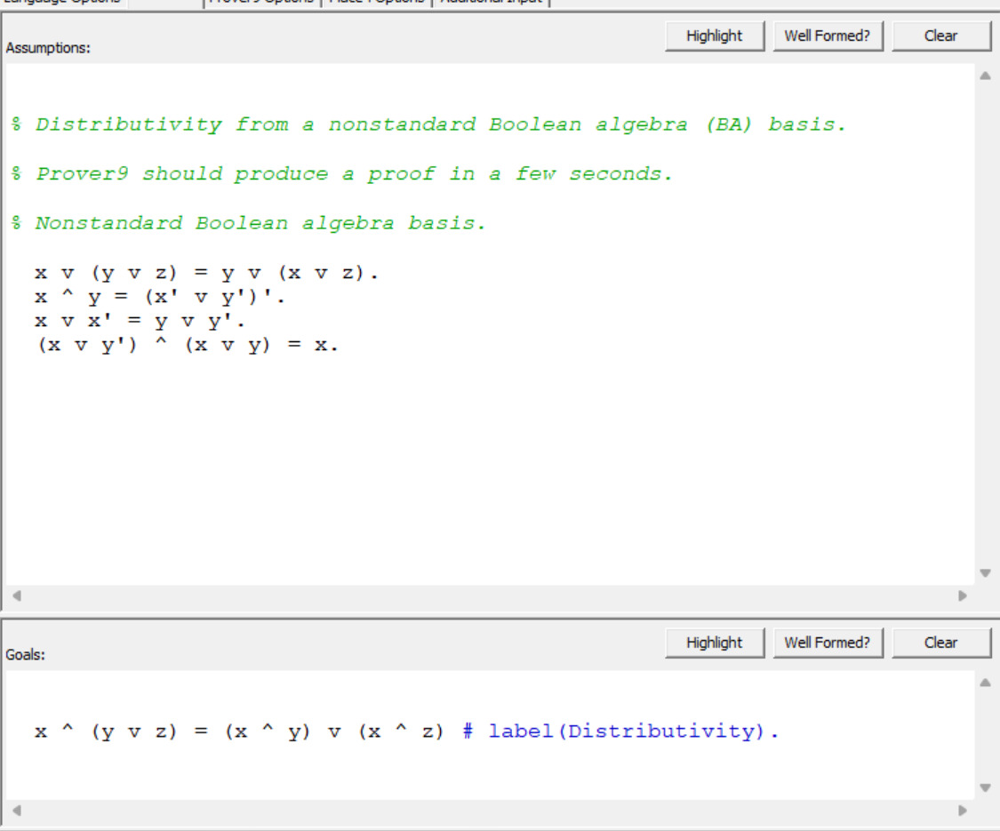

1. Motivação e Objetivo
Motivação
- Testes ≠ prova de correção
- Provas formais reduzem incidentes críticos
- Pode ser integrado em pipelines de CI/CD
Objetivo principal: provar a distributividade em Álgebra Booleana.
2. Resolução
- Trabalha em FNC (Forma Normal Conjuntiva)
- Regra: de (A ∨ X) e (¬A ∨ Y) ⇒ (X ∨ Y)
- Prova por refutação: negar o objetivo e buscar ⊥ (cláusula vazia / F)
3. Prover9 & Igualdade
Abaixo, é possível ver a interface do Prover9, onde são inseridas as suposições (Assumptions) e o objetivo (Goals) para a prova da distributividade.

- Para igualdade, usa paramodulação (substitui iguais por iguais)
- Mistura resolução, reescrita (rewrite) e paramodulação
- Etiquetas ajudam a localizar o objetivo e o resultado
4. O que a saída mostrou
| Métrica | Valor |
|---|---|
| Tempo | ~0,78 s (+0,19 s) |
| Tamanho da prova | 141 passos |
| Nível (profundidade) | 46 |
| Given clauses | 299 |
Fechamento: ... F → answer(Distributivity) ⇒ Teorema provado.
5. Como ler
A saída do Prover9 é uma sequência numerada de passos (passos de prova) que demonstram como a cláusula vazia (⊥ ou F) foi alcançada a partir da negação do teorema e dos axiomas fornecidos. Abaixo estão os principais elementos:
goal/label(Distributivity): objetivo marcadodeny(1): negação do objetivo (refutação)para(...):paramodulação(raciocínio com =)rewrite(...)/back_rewrite(...): simplificações por =resolve(...): passo de resoluçãonew_symbol(c_0): constante auxiliar (ex.:x ∨ x')$F/answer(...): achou contradição ⇒ objetivo verdadeiro
6. Aplicação Real
- Auditoria de firewall/ACL: provar que “/admin externo nunca é permitido”.
- Modela regras como fórmulas; nega a propriedade e busca a contradição (⊥).
- Se provar, significa que não existe rota que viole a política.
7. Conclusão
- Prover9 demonstra leis algébricas automaticamente.
- A saída é legível o suficiente para apresentar o objetivo, passos-chave e fechamento (F).
- Próximos passos: integrar em pipelines e checar políticas reais.